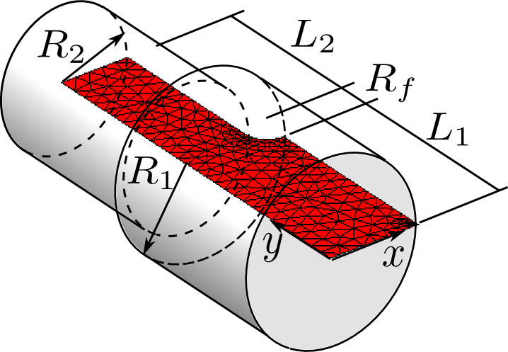
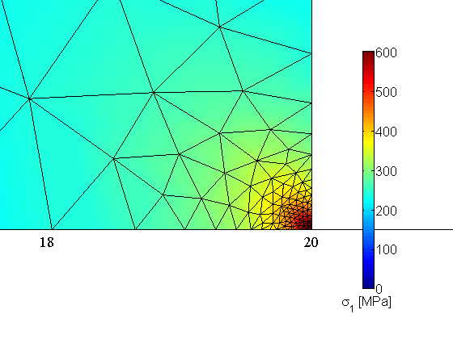
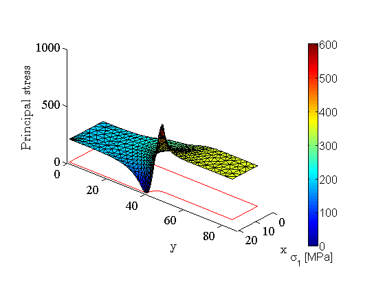
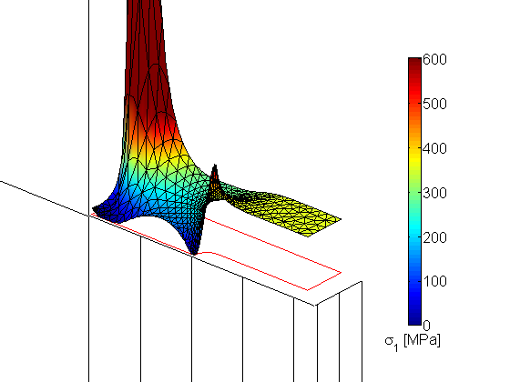

Stress calculation in a tension rod with shoulder fillet.
Contents
Link to the m-file.
Description
Circular tension rod with a transition in cross-sectional area is to be analyzed for maximum tensile stress. The rod is made of steel. The geometry is defined in Figure 1.
|  |
| Figure 1. Definition of the geometry of the tension rod. |
Because of the symmetry the axial-symmetry model reduction will be applied and quadratic triangles will be used to discretize the generating section.
The effect of the choice of the boundary conditions applied to the rod in the axial direction will be explored with four different settings.
Solution
function pub_rodwtrans
pu=physical_units_struct;
Material parameters:
E = 210e3*pu.MEGA*pu.PA;
nu = 0.3;
Geometrical dimensions:
R1= 20*pu.MM;
Rf=5*pu.MM;% Fillet radius
R2=R1-Rf;
L1=40*pu.MM;
L2=L1;
gv=[];
Total transmitted tensile force in the rod. This amounts to tensile stress of 200 MPa in the part with the larger radius.
forc=pi*R1^2*200*pu.MEGA*pu.PA;
Create the mesh using the automatic triangulation program targe2. The background (default) mesh size is given as:
mesh_size=3*pu.MM;
Call the mesh or with the specification of the domain and the mesh gradation. Note that the gradation anticipates the results, but a uniform mesh would show the features we wish to demonstrate almost as well.
[fens,fes,groups,edge_fes,edge_groups]=targe2_mesher({...
['curve 1 line 0 0 ' num2str([R1,0])],...
['curve 2 line ' num2str([R1,0]) ' ' num2str([R1,L1]) ],...
['curve 3 arc ' num2str([R1,L1]) ' ' num2str([R2,L1+Rf])...
' center ' num2str([R1,L1+Rf])],...
['curve 4 line ' num2str([R2,L1+Rf]) ' ' num2str([R2,L1+L2])],...
['curve 5 line ' num2str([R2,L1+L2]) ' ' num2str([0,L1+L2])],...
['curve 6 line ' num2str([0,L1+L2]) ' ' num2str([0,0])],...
['subregion 1 property 1 boundary 1 2 3 4 5 6'],...
['m-ctl-point constant ' num2str(mesh_size)],...
['m-ctl-point 1 xy ' num2str([R1,L1+Rf]) ...
' near ' num2str(mesh_size/200) ' influence ' num2str(mesh_size/10)],...
['m-ctl-point 2 xy ' num2str([R1,0]) ...
' near ' num2str(mesh_size/300) ' influence ' num2str(mesh_size/60)],...
}, 1.0, struct('axisymm',true,'quadratic',true));
% drawmesh({fens,fes},'fes','facecolor','red')
Geometrical tolerance is best taken as a fraction of the mesh size.
tolerance = mesh_size/100000;
Create the property and the material object.
prop = property_deformation_linear_iso (struct('E',E,'nu',nu)); mater = material_deformation_linear_biax (struct('property',prop, ... 'reduction','axisymm'));
Create the finite element model machine for the interior (volume).
femm = femm_deformation_linear(struct ('material',mater, 'fes',fes,... 'integration_rule',tri_rule (struct('npts',3))));
Define the geometry and displacement fields.
geom = nodal_field(struct ('name',['geom'], 'dim', 2, 'fens',fens)); u = 0*clone(geom,'u');
In the first scenario we will transmit the force by distributed force in one cross-section, and the reaction will be generated in the other cross-section which will be clamped (all degrees of freedom fixed at zero).
1. One cross-section loaded with force, the other clamped
Apply EBC's: The larger-diameter circular cross-section is clamped (all degrees of freedom are fixed).
ebc_fenids=fenode_select (fens,struct('box',[0 R1 0 0],'inflate',tolerance)); u = set_ebc(u, ebc_fenids, true, [], 0.0);
The radial degrees of freedom on the axis of symmetry are suppressed:
ebc_fenids=fenode_select (fens,struct('box',[0 0 0 L1+L2],'inflate',tolerance)); u = set_ebc(u, ebc_fenids, true, 1, 0.0);
Apply the essential boundary conditions to the displacement field.
u = apply_ebc (u);
Number the free degrees of freedom.
u = numberdofs (u);
Assemble the system matrix.
K = stiffness(femm, sysmat_assembler_sparse, geom, u);
Create the force intensity object for the loaded cross-section.
fi=force_intensity(struct('magn',[0;forc/(pi*R2^2)]));
Create the finite element model machine for the cross-section with the applied force. In this case it is the edge 5.
efemm = femm_deformation_linear (struct ('material',mater, ... 'fes',subset(edge_fes,edge_groups{5}),... 'integration_rule',gauss_rule (struct('dim',1,'order', 2))));
Assembled the distributed load in the loaded cross-section.
F = distrib_loads(efemm, sysvec_assembler, geom, u, fi, 2);
Solve for the displacement.
u = scatter_sysvec(u, K\F);
Visualize the results.
visualize();
Zoom in on the edge that is clamped.
camset(gv, [1.9184e+01 4.5610e-01 1.4488e+04 1.9184e+01 ...
4.5610e-01 1.0000e+03 0 1.0000e+00 0 1.7460e-01]);
 The color confirms that the high stress occurs at the corner of the domain where the clamped condition in the cross-section changes into the free surface of the rod. The limit of the analytical solution is actually known to be an infinite stress at that location. This is a location of the stress singularity.
The singularity is probably not real (unless one end of the bar is actually clamped as above, with a 90° angle corner, which is somewhat unlikely: there would be at least a fillet to remove the infinite stress). Therefore we should replace the clamped condition with something more realistic. In fact the singularity is due to the fact that we are not allowing for the cross-section to react to the tensile stress by contracting (as described mathematically by the nonzero Poisson ratio). So, if we allow the radial displacement to occur freely and take away only the axial displacement, which is what might be called a roller support, we will be likely closer to reality.
2. One cross-section loaded with force, the other supported on rollers
We have to force the displacement field to be re-created.
u = 0*clone(geom,'u');
As before, on the axis of symmetry we remove the radial degree of freedom.
ebc_fenids=fenode_select (fens,struct('box',[0 0 0 L1+L2],'inflate',tolerance)); u = set_ebc(u, ebc_fenids, true, 1, 0.0);
Now we apply axial (and axial only!) restraint on the larger cross-section.
ebc_fenids=fenode_select (fens,struct('box',[0 R1 0 0],'inflate',tolerance)); u = set_ebc(u, ebc_fenids, true, 2, 0.0);
Apply the new boundary conditions.
u = apply_ebc (u);
Number the free degrees of freedom. We have to do this because they have changed due to the new set of boundary conditions.
u = numberdofs (u);
That is also why we have to reassemble the stiffness matrix and the load vector.
K = stiffness(femm, sysmat_assembler_sparse, geom, u);
Create the finite element model machine for the cross-section with the applied force. In this case it is the edge 5.
efemm = femm_deformation_linear (struct ('material',mater, ... 'fes',subset(edge_fes,edge_groups{5}),... 'integration_rule',gauss_rule (struct('dim',1,'order', 2))));
The load vector is as before.
fi=force_intensity(struct('magn',[0;forc/(pi*R2^2)]));
F = distrib_loads(efemm, sysvec_assembler, geom, u, fi, 2);
Solve for the displacements and visualize the results.
u = scatter_sysvec(u, K\F); visualize();
Now this is better. This is really what we would expect: essentially uniform tensile stress in the cylindrical parts of the rod, and the variation around the fillet. The shoulder fillet is a stress concentrator (raiser) and we can see that the stress is indeed raised quite a bit at the surface of the fillet.
One might be tempted to apply the axial restraint at a point (node). This should be avoided for the following reasons.
3. One cross-section loaded with force, the other pinned at a point
Force the displacement field to be re-created.
u = 0*clone(geom,'u');
Now we apply axial restraint at the node at [0,0].
ebc_fenids=fenode_select (fens,struct('box',[0 0 0 0],'inflate',tolerance)); u = set_ebc(u, ebc_fenids, true, 2, 0.0);
As before, on the axis of symmetry we remove the radial degree of freedom.
ebc_fenids=fenode_select (fens,struct('box',[0 0 0 L1+L2],'inflate',tolerance)); u = set_ebc(u, ebc_fenids, true, 1, 0.0);
Apply the new boundary conditions.
u = apply_ebc (u);
Number the free degrees of freedom. We have to do this because they have changed due to the new set of boundary conditions.
u = numberdofs (u);
That is also why we have to reassemble the stiffness matrix and the load vector.
K = stiffness(femm, sysmat_assembler_sparse, geom, u);
Create the finite element model machine for the cross-section with the applied force. In this case it is the edge 5.
efemm = femm_deformation_linear (struct ('material',mater, ... 'fes',subset(edge_fes,edge_groups{5}),... 'integration_rule',gauss_rule (struct('dim',1,'order', 2))));
The load vector is as before.
fi=force_intensity(struct('magn',[0;forc/(pi*R2^2)]));
F = distrib_loads(efemm, sysvec_assembler, geom, u, fi, 2);
Solve for the displacements and visualize the results.
u = scatter_sysvec(u, K\F); visualize();
The distribution of stress is evidently wrong. Pinning the cross-section at a single point generates the same result as a concentrated force: not allowed in the solid-element based stress analysis model.
This concentrated force is the reaction. This reaction may be removed if the cross-section is loaded by an equivalent distributed force that replaces the concentrated reaction. So in addition to the pin, we will also apply balancing distributed load in the same cross-section.
4. Both cross-sections loaded with balancing forces, one pinned at a point
Force the displacement field to be re-created.
u = 0*clone(geom,'u');
Now we apply axial restraint at the node at [0,0].
ebc_fenids=fenode_select (fens,struct('box',[0 0 0 0],'inflate',tolerance)); u = set_ebc(u, ebc_fenids, true, 2, 0.0);
As before, on the axis of symmetry we remove the radial degree of freedom.
ebc_fenids=fenode_select (fens,struct('box',[0 0 0 L1+L2],'inflate',tolerance)); u = set_ebc(u, ebc_fenids, true, 1, 0.0);
Apply the new boundary conditions.
u = apply_ebc (u);
Number the free degrees of freedom. We have to do this because they have changed due to the new set of boundary conditions.
u = numberdofs (u);
That is also why we have to reassemble the stiffness matrix and the load vector.
K = stiffness(femm, sysmat_assembler_sparse, geom, u);
Create the finite element model machine for the cross-section with the applied force. In this case it is the edge 5.
efemm = femm_deformation_linear (struct ('material',mater, ... 'fes',subset(edge_fes,edge_groups{5}),... 'integration_rule',gauss_rule (struct('dim',1,'order', 2))));
The load vector is as before.
fi=force_intensity(struct('magn',[0;forc/(pi*R2^2)]));
F = distrib_loads(efemm, sysvec_assembler, geom, u, fi, 2);
Create the finite element model machine for the cross-section with the applied force. In this case it is the edge 5.
efemm = femm_deformation_linear (struct ('material',mater, ... 'fes',subset(edge_fes,edge_groups{1}),... 'integration_rule',gauss_rule (struct('dim',1,'order', 2))));
The load vector is as before.
fi=force_intensity(struct('magn',[0;-forc/(pi*R1^2)]));
F = F + distrib_loads(efemm, sysvec_assembler, geom, u, fi, 2);
Solve for the displacements and visualize the results.
u = scatter_sysvec(u, K\F); visualize();
Appendix
The visualization function. It draws the Outline of the cross-section in red color, the surface of the principal stress raised into the third dimension, and the color bar.
function visualize gv=graphic_viewer; gv=reset (gv,struct ('limits',[0 1.06*R1 0 1.1*(L1+L2)]/pu.MM)); set_graphics_defaults; scale=1; cmap = jet; fld = field_from_integration_points(femm, geom, u, [], 'princCauchy',1); nvals=fld.values/(pu.MEGA*pu.PA); nvalsrange=[0,600]; dcm=data_colormap(struct ('range',nvalsrange, 'colormap',cmap)); colorfield=nodal_field(struct ('name', ['colorfield'], 'data',map_data(dcm, nvals))); geom3=nodal_field(struct ('name', ['geom3'], ... 'data',[geom.values/(pu.MM),nvals])); u3=nodal_field(struct ('name', ['u3'], ... 'data',[u.values,0*nvals])); draw(femm,gv, struct ('x', geom3, 'u', +scale*u3,'colorfield',colorfield, 'shrink',1.0)); draw(mesh_boundary(femm.fes),gv, struct ('x', (1/pu.MM)*geom, 'u', +0*u,'edgecolor','r', 'shrink',1.0)); draw_colorbar(gv, struct('colormap',cmap,'position',[0.8 0.15 0.025 0.7],... 'minmax',nvalsrange,'label','\sigma_1 [MPa]')); set(gca,'DataAspectRatio', [1, 1, 20]) camset(gv, [7.0004e+02 6.4737e+02 9.9063e+03 -1.6194e-01 3.6204e+01 2.4266e+02 -3.4811e-01 -3.0263e-01 1.7745e+01 4.9266e+00]) labels x y 'Principal stress' interact(gv); end
end